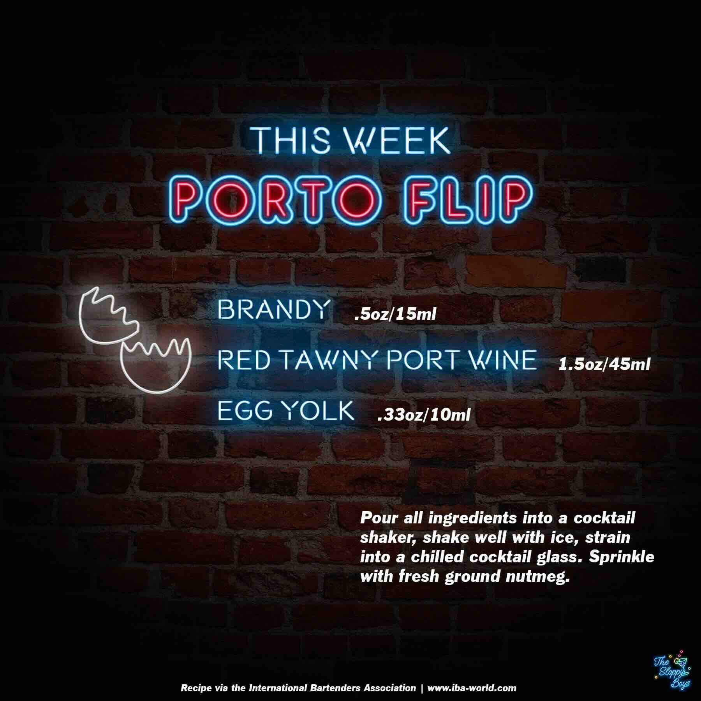

Porto Flip
Ingredients
- Brandy (.5oz/15ml)
- Red Tawny Port Wine (1.5oz/45ml)
- Egg Yolk (.33oz/10ml)
Steps
- Pour all ingredients into a cocktail shaker, shake well with ice, strain into a chilled cocktail glass.
- Sprinkle with fresh ground nutmeg.
Notes